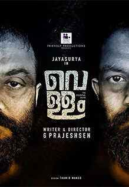

Vellam, The Essential Drink
Vellam, The Essential Drink
Njanentha cheyyande, nirthan pattande?’ Murali asks helplessly when his mother curses him for the shame he has brought to the family after a tussle at a family function. His alcohol use disorder is affecting not just him, but his family and everyone related to him. He is basically a good person and a good Samaritan, but everything he does ends up badly due to his unhealthy alcohol use.
Kho Kho
Ghosts of the past haunt a former athlete who accepts the job of a PT teacher in a girl’s school to bail her family out of a financial crisis. She discovers the game of kho-kho and a bunch of talented girls there and through them tries to achieve vicariously what she herself couldn’t in her career.
Nayattu
Nayattu (transl. The Hunt) is a 2021 Indian Malayalam-language political thriller film directed and co-produced by Martin Prakkat and written by Shahi Kabir. It stars Kunchako Boban, Joju George and Nimisha Sajayan in the lead roles and features Jaffar Idukki, Anil Nedumangad and Hakkim Shajahan in supporting roles.
Vaanku
Vaanku (Malayalam: വാങ്ക്) (transl. Adhan) is an Indian Malayalam-language drama film directed by Kavya Prakash based on the 2018 short story of the same name by Unni R.[2] Produced by Shimoga Creations, 7 J Films, and Trends Ad Film Makers, in association with Unni R., the film stars Anaswara Rajan, Nandhana Varma, Gopika Ramesh, and Meenakshi Unnikrishnan in the lead roles
Anugraheethan Antony
A happy-go-lucky boy named Antony disappoints his father, who used to be a teacher; the latter brings home two puppies to show his son how grateful animals can be; Antony, who hates puppies, takes every opportunity to disturb them.
HOME
#home is about humble,technology challenged Oliver twist struggles to keep his closeness with his sons and communicate as they grow up and become active on social media.
Lucifer
A political Godfather,who ruled the god's own country, dies and lot of theives dressed as politicians took oner the rule when question arises on the replacement of "God",just one name emerges;"Stephen Nedumbally"
Drishyam 2
George kutty a cinema hall owner,thrives in life but is a changed man. However,when his family get entangled in a criminal investigation,he must protect them from the legal investigation yet again.
Cold Case
When a skull is found in a discarded package,ACP Sathyajith is tasked with identifying the victim and finding the killer,Parallelly, a Journalist is haunted by a spirit and investigates it.